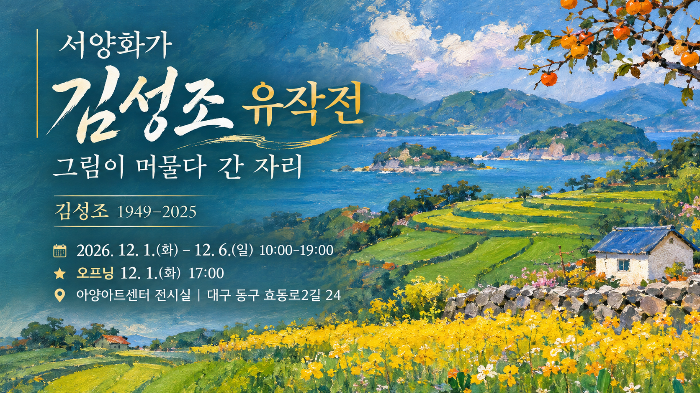
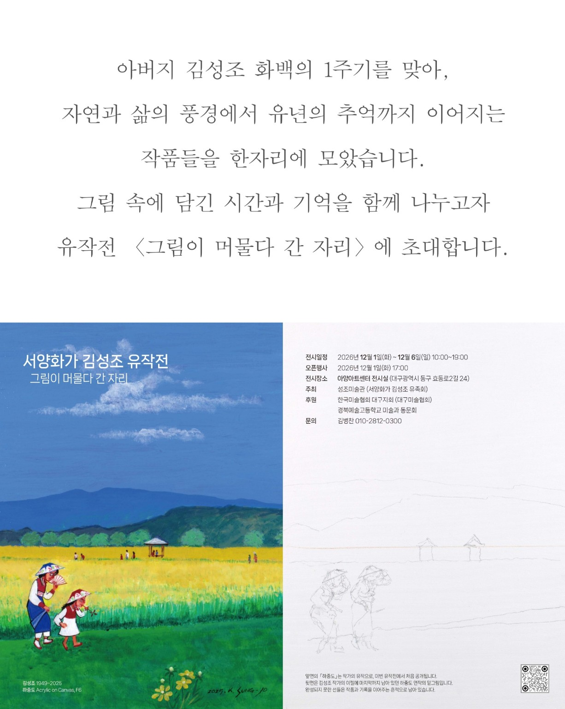

김성조 화백 1주기 추모 유작전
자연과 삶의 풍경에서 유년의 기억까지 이어지는 김성조 화백의 작품들을 한자리에 모았습니다. 그림이 머물다 간 자리에 화백의 예술혼과 따뜻한 시선이 다시 우리 곁으로 다가옵니다.
📅 전시 2026. 12. 1.(화) ~ 12. 6.(일) 10:00~19:00
★ 오프닝 2026. 12. 1.(화) 17:00
📍 장소 아양아트센터 전시실
대구광역시 동구 효동로2길 24
☎ 문의 김병찬 010-2812-0300

서양화가 김성조 (1949–2025)

김성조 화백은 자연과 삶의 풍경을 화폭에 담아온 서양화가입니다. 제공된 유작에서는 바다와 섬, 초록빛 들녘과 해안의 집 등 친숙한 풍경을 간결한 형태와 풍부한 색면으로 표현한 특징이 드러납니다.
특히 굽이치는 논밭의 선, 잔잔한 수평선, 작은 집과 배는 우리가 지나온 삶의 장소를 다시 바라보게 합니다.
※ 생몰연도와 전시 일정은 제공된 전시 초청장에 따릅니다. 학력·수상·개인전 등 상세 약력은 검증된 자료가 확보되면 추가합니다.
김성조 화백의 유작
김성조 화백의 유작 네 점을 소개하는 공간입니다. 현재 원본 이미지 등록을 준비 중이며, 아래 감상 제목은 원작의 공식 작품명이 아닌 임시 설명입니다.


작품 이미지 출처: 제공된 Seongjo Museum 이미지 자료. Copyright © Seongjo Museum. All rights reserved. 이미지의 재게시·배포 권한은 권리자 확인이 필요합니다.
그림은 남고, 마음은 이어집니다
화가가 머물렀던 풍경에는 붓끝의 온도가 남습니다. 초록 들녘의 굽은 선과 먼바다의 옅은 빛, 작은 집 한 채가 자리한 화면에서 우리는 한 사람이 오래 바라본 세상의 결을 만납니다.
이 유작전은 지나간 시간을 애도하는 자리인 동시에 그림 속에 남은 시선을 다시 만나는 시간입니다.
명도재 이명우 · 전시 소개를 위한 창작 감상문
전시 홍보 자료

명도재 AI 창작 홍보 이미지(등록 준비 중) — 실제 원작과 구별됩니다.

전시 초청장 원본(등록 준비 중)